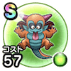

ベビル
4章7話〜4章9話イオラこころ最大コスト+4スキルHP回復効果+7%イオ属性じゅもんダメージ+10%イオ属性耐性+7%混乱耐性+7% / 7.5点
くわしい特徴
【ランク特殊効果】 イオラこころ最大コスト+4スキルHP回復効果+7%イオ属性じゅもんダメージ+10%イオ属性耐性+7%混乱耐性+7%

4章7話〜4章9話イオラこころ最大コスト+4スキルHP回復効果+7%イオ属性じゅもんダメージ+10%イオ属性耐性+7%混乱耐性+7% / 7.5点
【ランク特殊効果】 イオラこころ最大コスト+4スキルHP回復効果+7%イオ属性じゅもんダメージ+10%イオ属性耐性+7%混乱耐性+7%